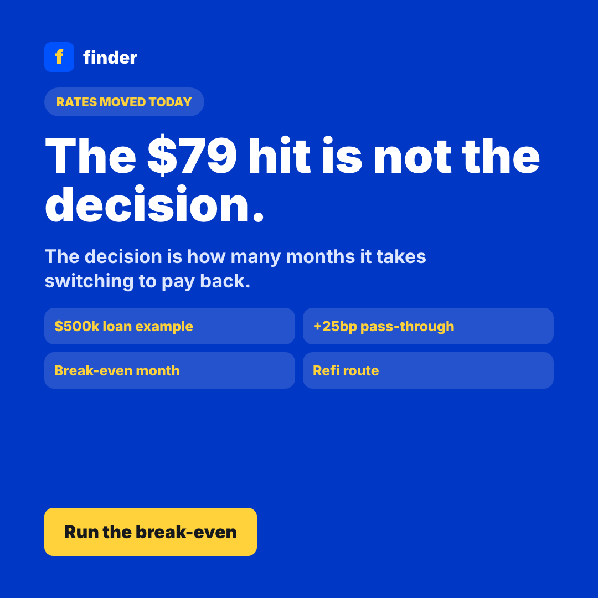
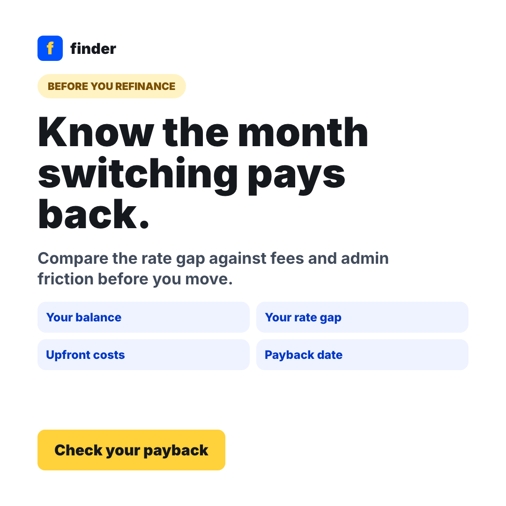
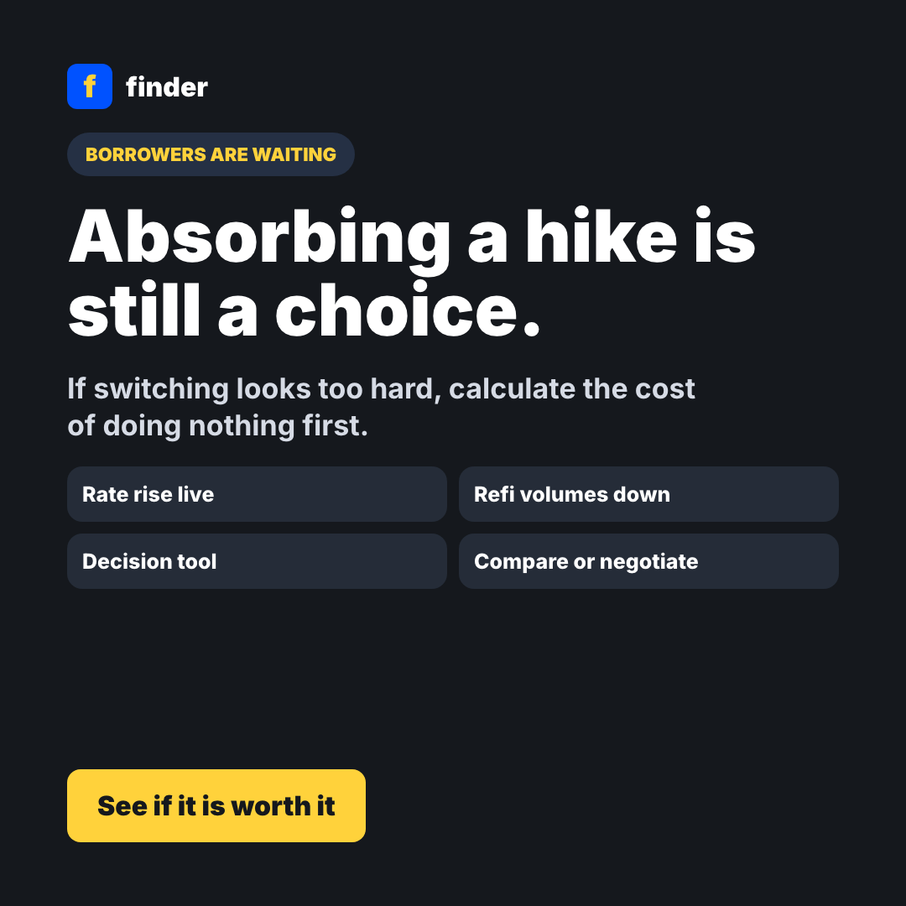

Anchor on their balance
Use the user's loan size and current rate, not a generic refinance claim.
Big four rises are live from 9 October 2026
The simple story is that a 25bp variable-rate rise adds about $79 a month on a $500,000 loan. The useful question is whether switching now beats the paperwork, discharge fees and time cost. This flow turns a rate gap into a break-even date before sending borrowers into a refinance funnel.
Start with the rate change they can feel, then show whether a new loan clears the upfront cost fast enough to justify action.
Use the user's loan size and current rate, not a generic refinance claim.
Include discharge, application, valuation and the user's own switching hassle.
Fast payback goes to comparison. Slow payback goes to negotiation scripts or hold.
Estimated payback
4.3 monthsto recover the switching cost
The switch pays back inside six months. This is comparison-funnel territory, not another awareness article.
Simple interest estimate only. It ignores compounding, offset balances, package fees, cashback, credit approval and loan terms.
Square social variants for Meta, Instagram and retargeting.


